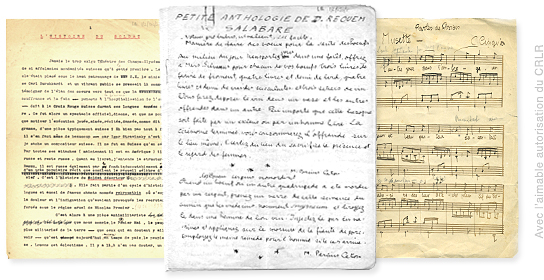

Charles-Albert Cingria au CRLR
Le fonds Charles-Albert Cingria conservé au Centre de recherches sur les lettres romandes, auquel il a été confié par les héritiers de l’écrivain, comprend l’ensemble le plus important et le plus complet de manuscrits et de dactylogrammes liés à l’auteur et à son activité.
On y trouve la majorité des éléments de l’œuvre restés inédits, à laquelle s’ajoutent des documents biographiques, iconographiques et retraçant l’édition et la réception des textes parus du vivant de l’auteur, inventoriés et classés sous différentes rubriques : « Iconographie », « Papiers personnels », « Imprimés », « Emissions radiophoniques ».
Ces archives comportent des manuscrits qui se rattachent à la genèse et à l’histoire d’œuvres majeures – publiées ou non – comme Le Comte des formes, Le Camp de César, Pétrarque, le Novellino, « Le voyage en Allemagne », « Le départ du théâtre en flammes », « Le carnet du chat sauvage », « Les grands lyriques provençaux », l’« Histoire de Provence ». Elles recèlent surtout un très grand nombre de textes et de dossiers liés à l’activité de chroniqueur et de critique de Cingria, dans tous les domaines qu’il a couverts, pendant un quart de siècle, dans des périodiques de Suisse, de France et d’ailleurs. On trouve enfin dans le fonds une abondante correspondance, où figurent quelques envois de Cingria et beaucoup de lettres, en majorité inédites, qu’il a reçues.
D’autres fonds conservés au CRLR contiennent des manuscrits ou d’autres documents de Cingria ou qui le concernent : citons notamment, en premier lieu, le fonds Alexandre Cingria, mais aussi le fonds Georges Anex, le fonds René Auberjonois, le fonds François Lachenal, le fonds Lucien de Dardel.
Pour plus de renseignements :
www.unil.ch/crlr
Stephane.Petermann@unil.ch
Charles-Albert Cingria à la BCU
La Bibliothèque cantonale et universitaire de Lausanne conserve des manuscrits et dactylogrammes dans le fonds Charles-Albert Cingria, constitué à partir de 1987 par des achats successifs. On y trouve notamment un exemplaire corrigé de Pendeloques alpestres, une dactylographie avec corrections manuscrites de Bois sec Bois vert, un manuscrit partiel d’Enveloppes, celui de La Reine Berthe et sa famille et celui de Notre terre et ses gens.
D’autres documents appartiennent à des archives éditoriales. Celles de la Guilde du livre, confiées à la BCU en 1981, contiennent plusieurs textes qui accompagnaient des lettres de l’écrivain à Albert Mermoud, le directeur de l’enseigne à laquelle ont paru Notre terre et ses gens et Stalactites. C’est le cas aussi du fonds Charles Veillon, donné par ce dernier en 1957, qui garde la trace de textes publiés dans le journal de l’entreprise lausannoise de confection.
Signalons encore des pages manuscrites dans les fonds Paul Budry, Daniel Simond et C. F. Ramuz, ainsi que, dans ce dernier fonds, des lettres de Cingria à Ramuz. Enfin, la BCU possède également un important ensemble de lettres adressées par Cingria à Meraud Guevara-Guiness.
Plus d’informations sur le site du département des manuscrits de la BCU de Lausanne :
www.unil.ch/bcu

Cingria aux Archives littéraires de la BNS
Fonds Pierre-Olivier Walzer
Dans une lettre de 1945, Cingria loue « l'activité angélique » déployée à son endroit par Pierre-Olivier Walzer, son voisin du 5 de la Grand-Rue à Fribourg: le Fonds P.-O. Walzer, créé aux ALS en 1991, vient brillamment confirmer son sentiment.
Walzer y a rassemblé un bel ensemble de correspondances et manuscrits, qui va de ce qui est probablement la plus ancienne pièce de Cingria, « A la fille du Payien », aux manuscrit et épreuves du Novellino, titre qui paraîtra en édition posthume en 1955, en passant par un exemplaire des Autobiographies de Brunon Pomposo enrichi de corrections et ajouts de la main de Cingria.
On y trouve les grands manuscrits du Pétrarque, du Camp de César, des Florides helvètes (dont Walzer fut l'éditeur aux Portes de France), mais aussi les petits textes polémiques qui fustigent le monde éditorial en 1944 (« Auteurs et éditeurs », « Tarifs de misère ») ainsi que l'amusante participation de Cingria aux publicités de Radio-Luxembourg (« Indicatif Philips »), le répertoire d'adresses utilisé par Charles-Albert dans lequel il notait à la volée des titres qui intriguent encore et, les manuscrits de quelques textes isolés : « A propos de la séparation de l'église et de l'état », « La Leçon de la Villa d'Este » ou « La Folle Chevauchée ».
Bibliophile, Walzer a collectionné pratiquement tous les titres de Cingria (jusqu'au rarissime Espéranto) en édition originale sur grand papier, ainsi que de nombreux numéros de ces revues réputées introuvables, dans lesquelles Cingria aimait à disperser ses titres.
Si Walzer à bien évidemment conservé les lettres que lui adressaient Cingria, il leur a adjoint, dans sa collection, les missives de Cingria reçues par des amis intimes, citons Abdul Wahab ou Pierre Jaquet, ainsi que des pièces isolées adressées à Cocteau, Gagnebin ou Pierre Minet.
Un important second pan des archives Walzer témoigne de la réception des écrits de Cingria pour laquelle il aura tant œuvré. On y trouve aussi bien les travaux préparatoires de la première édition des
Œuvres complètes et de la correspondance générale, que la documentation de L'Association des Amis de Charles-Albert Cingria alors qu'il la présidait ou les maquettes des
Petites Feuilles pour les numéros qu'il préparait avec Jean-Louis Kuffer. Mais aussi la documentation et la préparation des très nombreux articles, monographies, conférences, soirées ou expositions que Walzer consacra à Cingria et qui, à présent, forme une excellente source pour la recherche.
Collection Mermod
C'est à l'éditeur et mécène Henry-Louis Mermod que nous devons les plus sobrement belles éditions de Cingria. Un dépôt partiel de ses archives effectué en 1997 par sa fille et sa petite-fille, nous permettent d'avoir accès au très beau manuscrit des Impressions d'un passant à Lausanne, illustré de cartes postales choisies par Cingria ; à celui de « Ramuz chez lui et ailleurs », de « James Joyce », deux textes destinés à la revue Aujourd'hui ; à celui de la « Géographie vraie », mais aussi aux épreuves montées en volume du Pétrarque. On trouvera également une transcription dactylographique, établie par le secrétariat des Ed. Mermod, du Seize Juillet, du Bey de Pergame et de « Capello basso » ainsi que quelques photographies prises par Mermod. Enfin une centaine de lettres de Cingria à son éditeur documente cette collaboration à la fois amicale et houleuse.
Fonds Borgeaud
Autre locataire du 5 de la Grand-Rue de Fribourg, Georges Borgeaud a conservé dans son Fonds, remis aux ALS en 1996, une belle correspondance avec l'impétueux Charles-Albert.
Collection Nordmann
A Fribourg, toujours, en 1945, Roger Nordmann, alors jeune président de Belles-Lettres, publiait les Musiques de Fribourg. Le manuscrit en est à présent déposé aux ALS, ainsi qu'un portrait de Charles-Albert effectué par Géa Augsbourg pour le lancement de l'édition.
Fonds Chessex
Ce fonds ne recèle qu'un manuscrit de Cingria, le petit texte « Philodoxie ».